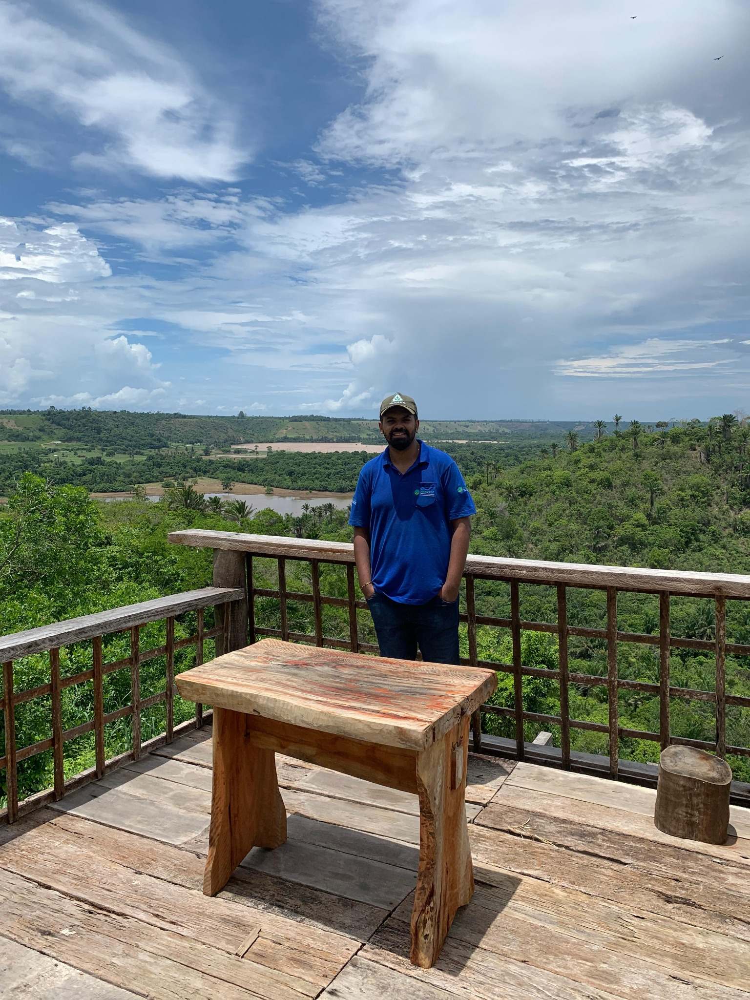
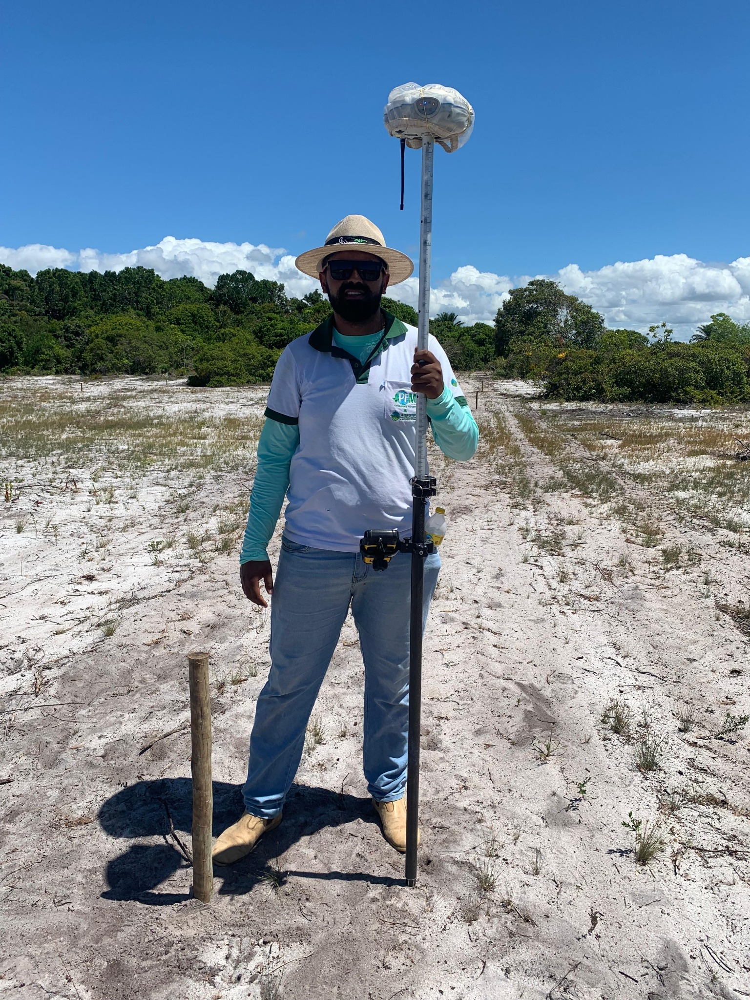
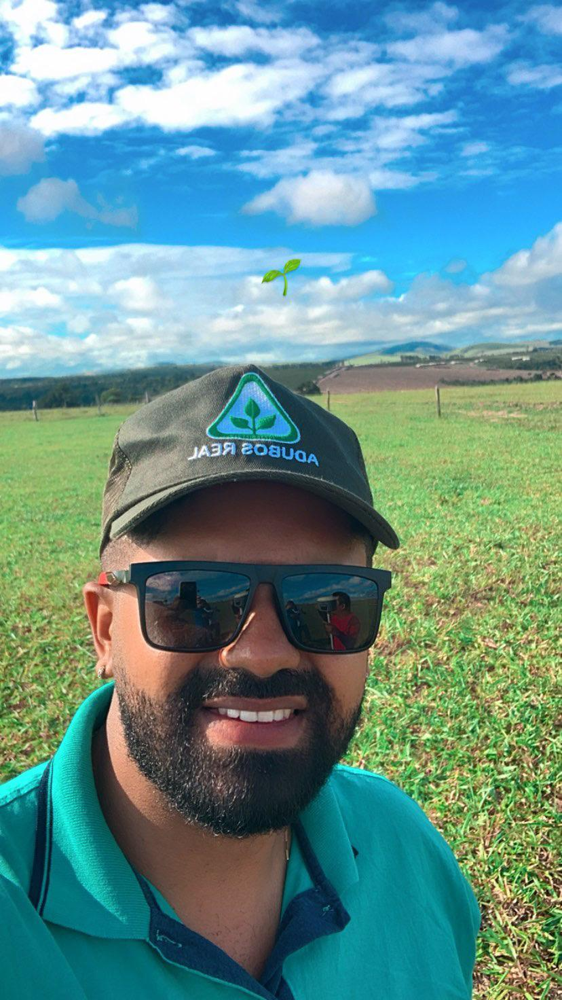
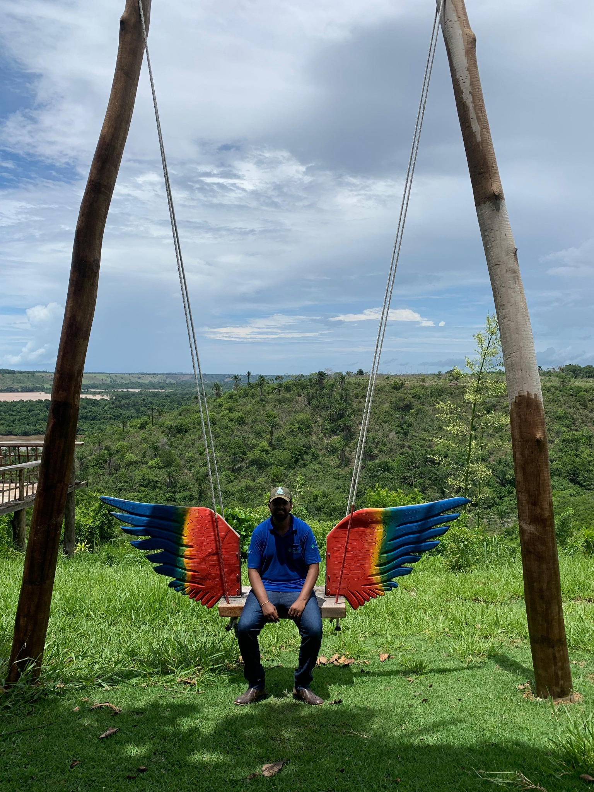

Georreferenciamento
GNSS/RTK, processamento, peças técnicas e certificação SIGEF/INCRA.
Engenharia Florestal, Georreferenciamento, SIG e regularização territorial integrados em projetos técnicos de ponta a ponta.



Engenheiro Florestal e Especialista em Geotecnologias, com atuação na integração entre levantamentos de campo, geoprocessamento, análise territorial e elaboração de peças técnicas.
Atuo em georreferenciamento de imóveis, certificação no SIGEF/INCRA, cartografia técnica, regularização fundiária e ambiental, silvicultura, licenciamento ambiental e estudos territoriais.
GNSS/RTK, processamento, peças técnicas e certificação SIGEF/INCRA.
QGIS, ArcGIS, estruturação de bases, análise espacial e cartografia temática.
Análise registral, restituição cartográfica, REURB e compatibilização de limites.
Inventário, produtividade, silvicultura, PRADA e regularização ambiental.
APP, recursos hídricos, mineração, uso do solo e estudos territoriais.
Plantas, croquis analíticos, mapas temáticos e comunicação visual de dados geoespaciais.
Levantamentos GNSS/RTK, reconhecimento de limites, cadastro territorial e apoio a projetos ambientais e fundiários.

Geotecnologias aplicadas à solução de problemas fundiários, ambientais e territoriais.
Falar pelo WhatsApp